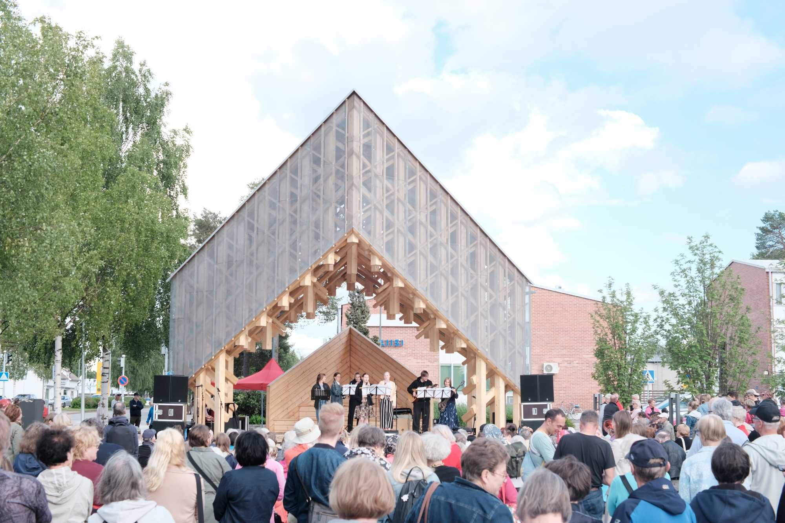
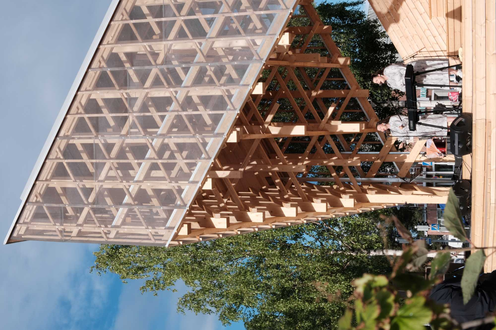
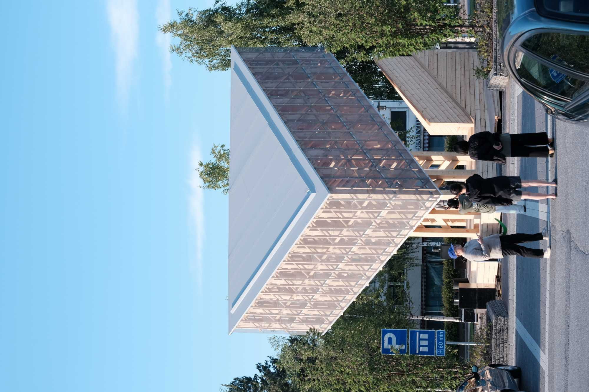
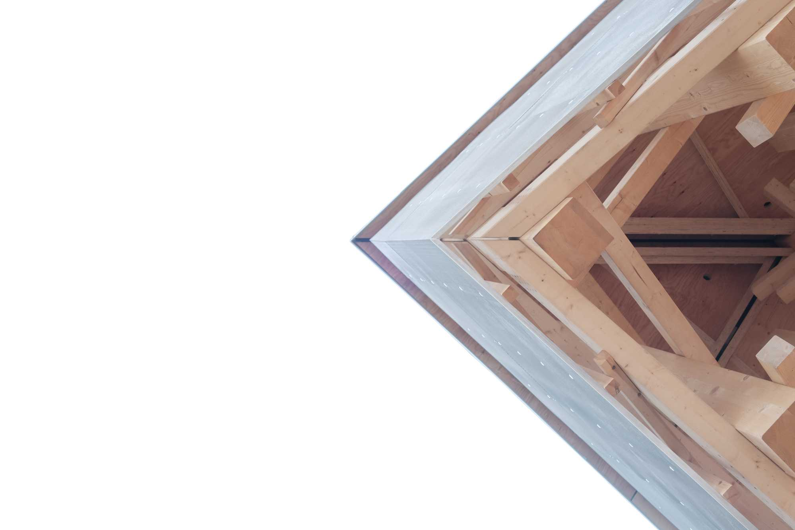
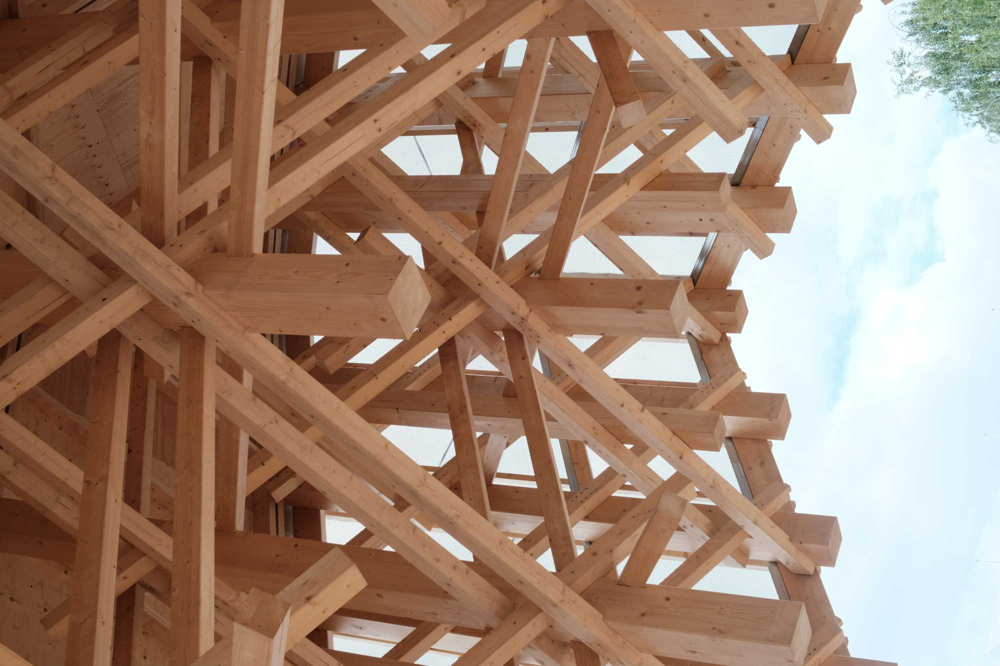
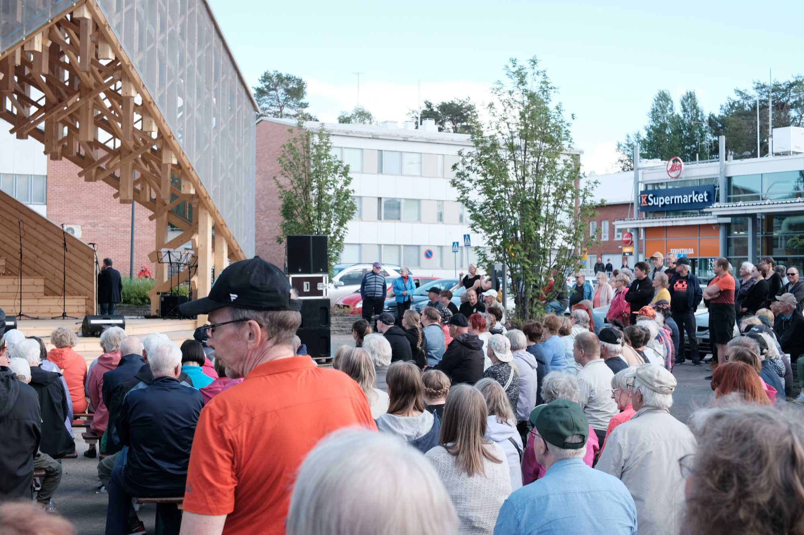

Architecture · Finland
Outdoor Timber Stage, Finland
An outdoor timber stage standing in the town of Kuhmo, Finland. As a member of the Aalto University Wood Program, I worked on it from design through construction. Using local wood, in an environment of snow and light, it aims to be a place for gathering, and for returning once more to the forest.
The timber structure, which recalls a crystal (kide), changes color over time in Finland's harsh climate and lives on while being cared for. It is a project in which the cycle of wood as a material connects directly with the thinking of “water and wood” that YU-EN DESIGN STUDIO values.
Architizer A+Awards — Popular Winner / Cultural Pavilions (2025). Featured on ArchDaily (May 2025) and architecturephoto.net (September 2025).





